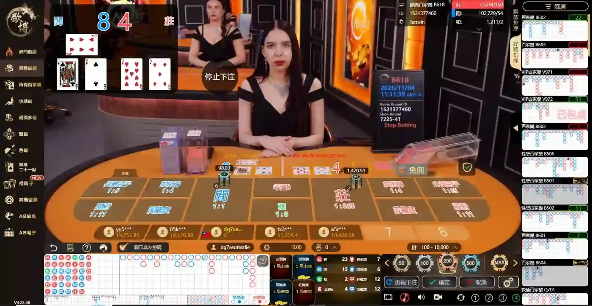

歐博真人是老字號品牌，單一入口就能玩百家樂、推筒子、21 點與電子遊戲，我實測連線穩定。但直播會收到明顯的環境音，聲音頗大，容易影響判斷；設備較有年代感，荷官以東南亞語言為主、互動少。網路上曾有斷線反映，品牌方未正面回應。
| 官方試玩入口 | 無 |
|---|---|
| 遊戲種類 | 7 種 |
| 最大優點 | 玩法多、單一入口 |
| 主要限制 | 環境音大、設備有年代感 |
| 社群評價 | 曾有斷線反映，品牌方未正面回應 |
| 總評分 | 4 / 5 |
關於 歐博真人
歐博真人（Allbet Gaming）依國際博弈展 ICE 的參展商資料，成立於 2014 年，是亞洲較早經營的真人娛樂遊戲商之一。
- 成立於 2014 年
- 選單設有性感廳、超級多檯等特色廳
- 推筒子在選單上標示為新遊戲
- 另有 AB 捕魚、AB 電子等非真人遊戲
資訊來源：ICE 國際博弈展、本人試玩遊戲介面截圖
歐博真人試玩入口
無。歐博真人目前沒有官方試玩入口，必須透過提供免費體驗金的娛樂城才能進入牌桌。
試玩前請先了解
- 台灣目前沒有合法的線上娛樂城。在台灣參與網路賭博，可能觸犯刑法第 266 條。
- 避開要求私下聯繫、來路不明的網站，註冊前先閱讀平台條款，詳見假網站辨識。
- 提供試玩之平台，僅作為體驗使用，無法直接兌換成現金。
歐博真人有哪些遊戲？
歐博真人的選單包含百家樂、番攤、色碟、無限二十一點、推筒子、AB 捕魚、AB 電子，扣除性感廳、超級多檯等廳別後共 7 種遊戲，「遊戲種類」評為 4 分。推筒子在選單上標示為新遊戲，平台持續開發新玩法。
百家樂性感廳超級多檯番攤色碟無限二十一點推筒子其他遊戲AB 捕魚AB 電子

依試玩畫面整理（2026 年 11 月），遊戲選單可能隨遊戲商更新而變動。
遊戲種類比較
歐博的強項是玩法多，以下比較遊戲種類較多的品牌，說明欄為我實測心得。
| 品牌 | 遊戲種類 | 實測心得 |
|---|---|---|
| 歐博真人 | 7 種（4 / 5） | 歐博真人的選單包含百家樂、番攤、色碟、無限二十一點、推筒子、AB 捕魚、AB 電子，扣除性感廳、超級多檯等廳別後共 7 種遊戲，「遊戲種類」評為 4 分。推筒子在選單上標示為新遊戲，平台持續開發新玩法。 |
| 多寶真人 | 19 種（5 / 5） | 多寶真人共有 19 種遊戲，是我實測中最多的品牌，「遊戲種類」評為 5 分。百家樂細分為極速、經典、電投、共咪、閃電 5 種玩法，另有 21 點、輪盤、骰寶、龍虎、德州撲克、牛牛、炸金花、三公等卡牌與桌上遊戲。 |
| SA 真人 | 7 種（4 / 5） | SA 真人的選單有百家樂、輪盤、骰子、龍虎、二十一點、博丁、色碟，共 7 種遊戲，「遊戲種類」評為 4 分。其中博丁是較少見的玩法，適合想嘗試百家樂以外遊戲的玩家。 |
| DG 真人 | 3 種（2 / 5） | DG 真人共有 3 種遊戲：百家樂、骰寶、輪盤。分類精簡，進入後很快就能找到百家樂桌；但想嘗試其他玩法的玩家選擇較少，因此「遊戲種類」評為 2 分。 |
歐博真人實測心得
歐博真人的玩法最齊全之一，單一入口就能切換百家樂、推筒子、21 點與電子遊戲，不需要頻繁換視窗。我使用個人手機網路試玩，沒有延遲或斷線。不過，直播會收到明顯的環境音，聲音頗大，容易影響判斷；設備與直播裝潢較有年代感，荷官以東南亞語言為主，互動少。
優點
- 玩法多，單一入口就能切換
- 持續新增遊戲，例如推筒子、新 21 點
- 實測連線穩定
缺點
- 直播會收到明顯的環境音，聲音頗大，容易影響判斷
- 設備與直播裝潢較有年代感
- 荷官互動少
歐博真人玩家留言
以下是訪客分享的歐博真人試玩心得，與首頁「快速查看」視窗中的留言相同。玩家留言僅代表個人經驗，未經本站驗證。
訪客留言功能即將開放。開放後免註冊即可匿名留言，為防止廣告與詐騙，留言中不可包含 LINE ID、網址或任何連結。
資料來源
- 本人試玩遊戲介面截圖（2026 年 11 月）
- ICE 國際博弈展：Allbet 參展商介紹
- 刑法第 266 條條文（司法院裁判書附錄）
- 1925 安心專線（衛生福利部）